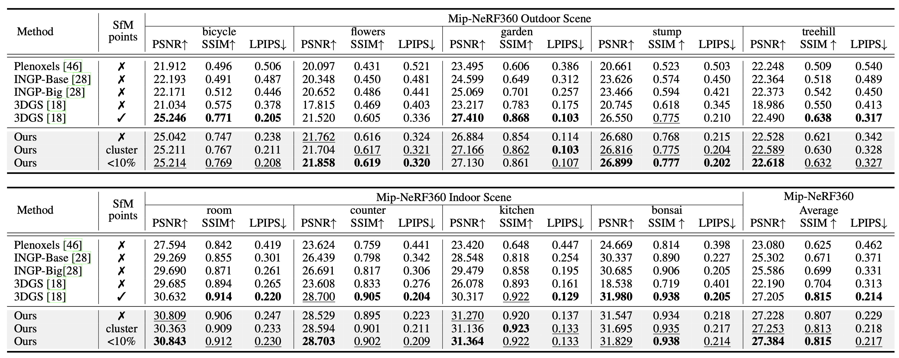
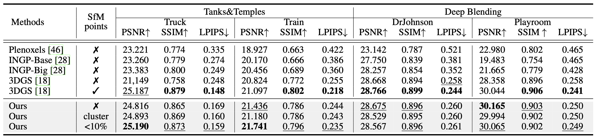
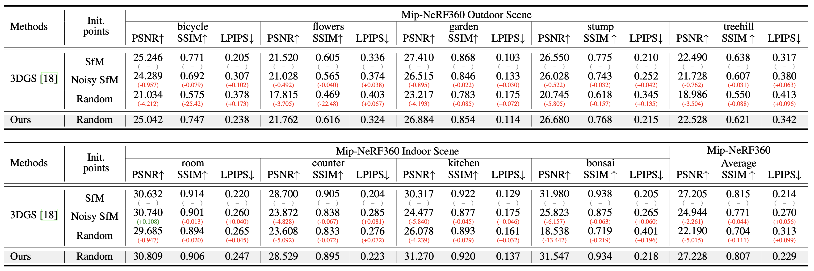
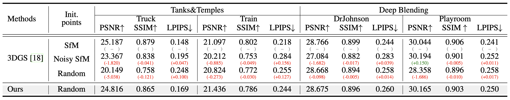

Korea University
Korea University


Left and right show the results from 3DGS and ours trained with randomly initialized point cloud respectively. Transition from 3DGS to ours simply requires our strategy consisted of sparse-large-variance (SLV) random initialization, progressive Gaussian low-pass filtering, and adaptive bound-expanding split (ABE-Split) algorithm.
Abstract
3D Gaussian splatting (3DGS) has recently demonstrated impressive capabilities in real-time novel view synthesis and 3D reconstruction.
However, 3DGS heavily depends on the accurate initialization derived from Structure-from-Motion (SfM) methods.
When the quality of the initial point cloud deteriorates, such as in the presence of noise or when using randomly initialized point cloud,
3DGS often undergoes large performance drops. To address this limitation, we propose a novel optimization strategy dubbed
RAIN-GS (Relaxing Accurate INitialization Constraint for 3D
Gaussian Splatting). Our approach is based on an in-depth analysis of the original 3DGS optimization scheme and
the analysis of the SfM initialization in the frequency domain. Leveraging simple modifications based on our analyses,
RAIN-GS successfully trains 3D Gaussians from sub-optimal point cloud (e.g., randomly initialized point cloud),
effectively relaxing the need for accurate initialization. We demonstrate the efficacy of our strategy through quantitative and qualitative
comparisons on multiple datasets, where RAIN-GS trained with random point cloud achieves performance on-par with or even
better than 3DGS trained with accurate SfM point cloud.
Qualitative Results


Qualitative Results (Sparse View Settings)


Main Qualitative Results

Quantitative Results
We compare our model with Plenoxels, InstantNGP-Base, InstantNGP-Big, and 3DGS on the Mip-NeRF360 dataset, Tanks&Temples dataset, and Deep Blending dataset. All NeRF methods are trained without SfM points. We evaluate 3DGS and ours trained with SfM-initialized and randomly initialized point cloud. For ours trained with SfM-initialized point cloud, we evaluate utilizing different clustering methods of selecting the top 10% with the least reprojection error (denoted as < 10%) or using cluster centers (denoted as cluster) obtained through HDBSCAN.Mip-NeRF360 Dataset

Tanks&Temples and Deep Blending Dataset

Quantitative Results in different initial points conditions
In real-world scenarios, initial point cloud from SfM can be inaccurate or even unavailable. Under these conditions, 3DGS often fails to maintain its ability while our method can successfully train from randomly initialized point cloud. To demonstrate the effectiveness of our method, we compare our method with 3DGS trained from three different initial point conditions: SfM points, noisy SfM points, and the absence of initial points.Mip-NeRF360 Dataset

Tanks&Temples and Deep Blending Dataset

Citation
If you find our work useful in your research, please cite our work as:
@article{jung2024relaxing,
title={Relaxing Accurate Initialization Constraint for 3D Gaussian Splatting},
author={Jung, Jaewoo and Han, Jisang and An, Honggyu and Kang, Jiwon and Park, Seonghoon and Kim, Seungryong},
journal={arXiv preprint arXiv:2403.09413},
year={2024}
}
Acknowledgements
The website template was borrowed from Michaël Gharbi.